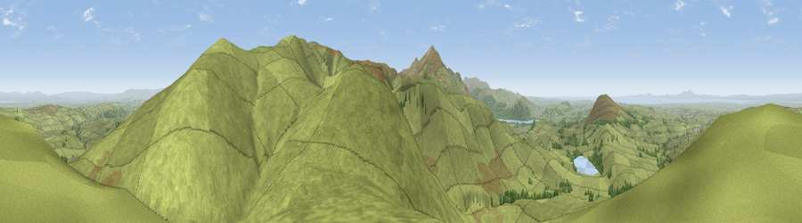

Longlands Fell
#1393 in England · top 13% of its area beats it · near UldaleThe view, rendered

A 360° render of this exact spot computed from the terrain model, tree cover and land cover — summer colours, afternoon light, calibrated against photographs of famous viewpoints. Real trees, hedges and buildings will differ in detail.
The panorama
Grey silhouette: terrain skyline in each direction (720 bearings, Earth curvature and refraction included). Dashed green: skyline with trees (+15 m) and buildings (+8 m) as obstacles. Blue strip: how far the ground is visible on each bearing.
Where the view opens
Wedge length = distance to the farthest visible ground on that bearing (vegetation-aware). Rings at 10, 25 and 50 km.
What fills the view
93% grassland · 5% woodland · 1% water ·
Angular shares of the visible panorama (visual magnitude), not map area. Landscape diversity 0.14 (0–1 Shannon).
Key numbers
More beautiful places nearby
The staircase of upgrades: each row has a higher view potential than everything closer. Driving times are estimates from straight-line distance, calibrated against real road routing — check an actual route before setting out.
| Place | Direction | Drive | Score |
|---|---|---|---|
| Brae Fell | E · 1 km | ~4 min | 79.0 |
| High Pike | E · 4 km | ~10 min | 79.5 |
| Binsey | W · 5 km | ~11 min | 80.5 |
| Viewpoint near Bassenthwaite | SSW · 6 km | ~12 min | 82.8 |
| Skiddaw South Top | SSW · 7 km | ~14 min | 85.8 |
| Ullock Pike | SSW · 7 km | ~15 min | 89.4 |
| Long Side | SSW · 8 km | ~15 min | 89.5 |
| Viewpoint near Finsthwaite | SSE · 48 km | ~69 min | 90.3 |
54.70860, -3.12596 · source: osm peak · position refined by local search. Computed location — check access rights before visiting.